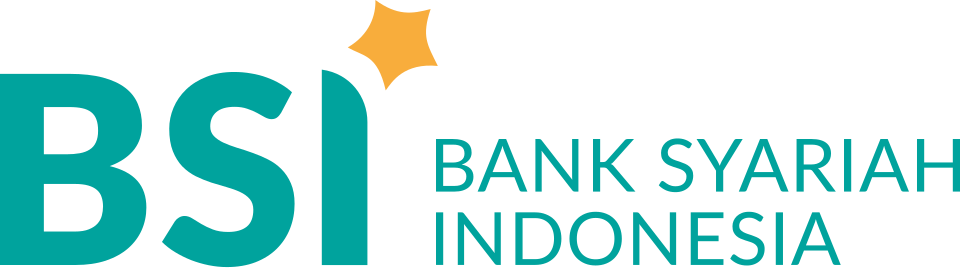

Orang Tua Asuh
Menjadi orang tua asuh bagi seorang santri penghafal Al-Qur'an dari kalangan dhuafa — menanggung biaya pendidikan dan kebutuhan mereka, agar cahaya Al-Qur'an terus tumbuh.
Gotong royong menanggung satu generasi Qur'ani
Program Orang Tua Asuh adalah wujud nyata takaful ijtimai — jaminan sosial dalam Islam. Sebagai orang tua asuh, Anda menanggung sebagian biaya pendidikan dan kebutuhan harian seorang santri penghafal Al-Qur'an yang berasal dari keluarga dhuafa di Rumah Tahfidz Al-Qur'an Al-Qalam.
Dengan komitmen rutin Anda, anak-anak dhuafa berprestasi tetap dapat mengenyam pendidikan tahfidz berasrama secara gratis — memadukan hafalan Al-Qur'an yang mutqin, kurikulum nasional, dan pembinaan karakter kepemimpinan.
Saat ini Rumah Tahfidz Al-Qalam hanya membuka pendaftaran santri jenjang SMP / MTS (lulusan SD/MI) dari kalangan dhuafa.
Mengapa peran Anda penting
Lembaga ini didanai sepenuhnya dari amanah umat — infak, sedekah, dan donasi.
Potensi terbaik umat sering tersembunyi di kalangan dhuafa. Anda membuka pintu bagi mereka.
Satu komitmen kecil yang rutin lebih berdampak daripada bantuan besar yang sesaat.
Profil santri penerima amanah
Sepuluh santri penghafal Al-Qur'an dari berbagai penjuru negeri — seluruhnya berasal dari keluarga dhuafa yang termasuk salah satu dari delapan asnaf, golongan yang berhak menerima zakat.

Dari 3 provinsi, 10 kota
Pekerjaan orang tua santri
Mayoritas adalah buruh, petani, dan pekerja informal dengan penghasilan yang tidak menentu.
Harus termasuk salah satu dari 8 asnaf
Beasiswa pendidikan tahfidz ini hanya diberikan kepada santri yang keluarganya termasuk salah satu dari delapan golongan (asnaf) penerima zakat — sebagaimana ditegaskan dalam Al-Qur'an Surah At-Taubah ayat 60. Santri RTA Al-Qalam umumnya berasal dari golongan fakir dan miskin.
Fakir
Tidak memiliki harta maupun penghasilan untuk memenuhi kebutuhan pokok.
Miskin
Memiliki penghasilan, namun tidak mencukupi kebutuhan dasar sehari-hari.
Amil
Petugas yang mengurus pengumpulan dan penyaluran zakat.
Muallaf
Orang yang baru memeluk Islam dan hatinya perlu diteguhkan.
Riqab
Memerdekakan budak atau membebaskan diri dari perbudakan.
Gharim
Orang yang terlilit hutang untuk memenuhi kebutuhan yang halal.
Fisabilillah
Berjuang di jalan Allah — termasuk menuntut ilmu agama dan menghafal Al-Qur'an.
Ibnu Sabil
Musafir yang kehabisan bekal dalam perjalanannya.
Amanah Anda hari ini, pahala layaknya berjihad yang mengalir di setiap huruf Al-Qur'an yang mereka baca.
Keseharian Santri di RTA Al-Qalam
Kebutuhan nyata seorang santri
Asrama & Makan
Tempat tinggal yang layak dan makan harian bergizi selama menghafal Al-Qur'an.
Biaya Pendidikan
Honor guru tahfidz, kitab, mushaf, dan operasional kegiatan belajar-mengajar.
Seragam & Kebutuhan
Pakaian, perlengkapan belajar, dan kebutuhan pribadi harian para santri.
Pembinaan Karakter
Pendampingan akhlak, kepemimpinan, dan kemandirian sepanjang hari.
Cara menjadi orang tua asuh
Pilih komitmen
Tentukan jangka waktu & nominal donasi sesuai kemampuan Anda.
Isi data diri
Lengkapi formulir digital — nama, alamat, WhatsApp & tanggal transfer.
Donasi via QRIS / Transfer
Scan QRIS atau transfer ke rekening BSI INFAQ RTA Al-Qalam setiap tanggal komitmen Anda.
Terima laporan
Dapatkan laporan perkembangan santri & keuangan secara berkala.
Buat komitmen Anda
Pilih jangka waktu dan nominal yang sesuai dengan kemampuan Anda. Tidak ada nominal yang terlalu kecil.
Pilih jangka waktu
Pilih nominal per bulan
Lengkapi data diri
Pilih tanggal di mana Anda berkomitmen berdonasi setiap bulan.
Data dikirim langsung ke Admin RTA Al-Qalam melalui WhatsApp. Tidak ada pembayaran di halaman ini.
Jazaakumullaahu khayran!
Komitmen Anda sebagai orang tua asuh telah disiapkan. Jika WhatsApp belum terbuka otomatis, tekan tombol di bawah lalu kirim pesannya ke Admin.
Buka WhatsApp Admin →Pilih cara berdonasi Anda
Donasi dapat dilakukan melalui QRIS dari e-wallet atau m-Banking apa pun, atau transfer langsung ke rekening BSI kami.


FAQ Program Orang Tua Asuh
Program donasi rutin di mana Anda berperan sebagai orang tua asuh yang menanggung sebagian biaya pendidikan dan kebutuhan seorang santri penghafal Al-Qur'an dari kalangan dhuafa di RTA Al-Qalam, sehingga mereka dapat belajar secara gratis.
Mulai dari Rp100.000 per bulan. Tersedia pilihan Rp100.000, Rp250.000, Rp500.000, Rp750.000, atau nominal lain sesuai kemauan dan kemampuan Anda. Tidak ada nominal yang dianggap terlalu kecil.
Anda dapat memilih jangka waktu 6 bulan, 1 tahun, 2 tahun, atau 3 tahun. Komitmen 3 tahun setara dengan menemani satu santri menuntaskan seluruh jenjang SMP/MTS-nya.
Ada dua cara: QRIS resmi INFAQ RTA Al-Qalam yang dapat di-scan dari aplikasi bank atau e-wallet apa pun, atau transfer bank ke rekening BSI 7346-7741-12 a.n. INFAQ RTA AL QALAM (dari bank mana pun via BI-Fast). Anda berdonasi setiap bulan pada tanggal komitmen yang Anda pilih saat mengisi formulir.
Tanggal komitmen berfungsi sebagai pengingat rutin agar donasi Anda konsisten. Tidak masalah jika tertunda beberapa hari — yang utama adalah keistiqamahan niat Anda.
Seluruh donasi dialokasikan untuk biaya operasional pendidikan dan kebutuhan santri: asrama, makan harian, honor guru tahfidz, kitab & mushaf, seragam, serta kebutuhan pribadi para santri dhuafa. Donasi dikelola secara kolektif dan transparan sesuai SOP Yayasan.
Ya. Sesuai SOP, Yayasan menerbitkan laporan berkala (impact report) berisi ringkasan penggunaan dana, perkembangan hafalan & prestasi santri, serta dokumentasi kegiatan, yang dikirimkan kepada para donatur terdaftar.
Saat ini RTA Al-Qalam hanya membuka pendaftaran santri jenjang SMP/MTS (lulusan SD/MI) dari kalangan dhuafa, dengan target hafalan 15 Juz dalam pendidikan berasrama.
Komitmen ini bersifat sukarela. Anda dapat menyesuaikan nominal, memperpanjang, atau menghentikannya kapan saja dengan menghubungi Admin RTA Al-Qalam melalui WhatsApp.